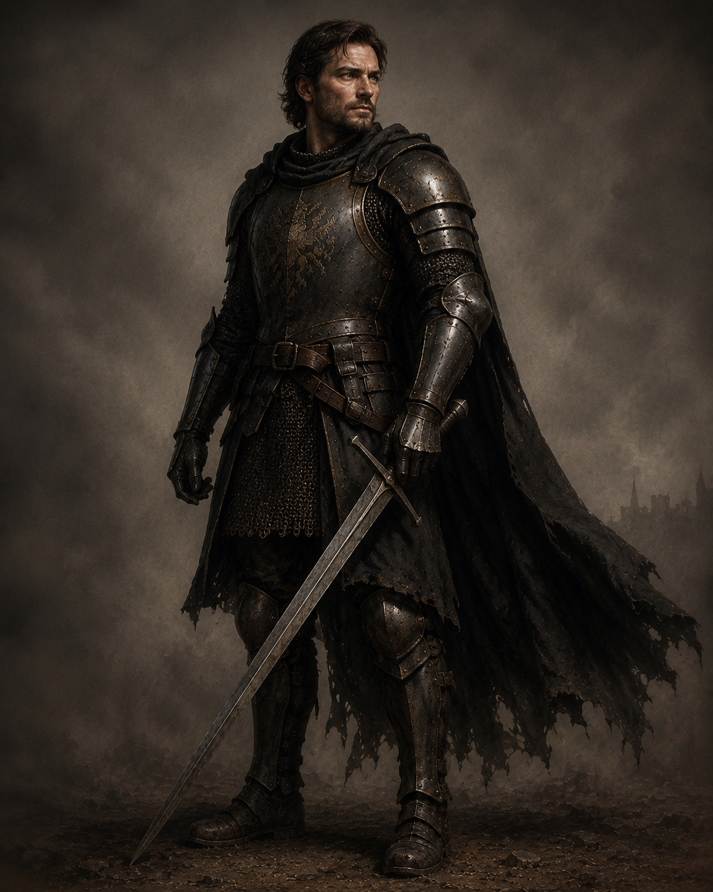

Человек
Конос являлся капитаном рыцарей Фраустера и обладал значительным авторитетом среди молодых воинов. Объект отличался хорошей боевой подготовкой, однако архив не обнаружил признаков, свидетельствующих о наличии у него рыцарских принципов, которые он был обязан защищать.
Основной особенностью объекта является практически полное отсутствие внутренних нравственных ограничений. Конос способен совершать любые действия, если считает, что они помогут сохранить положение, получить власть или избежать наказания.
Объект систематически использует ложь, запугивание, подкуп и служебное положение. При этом предпочитает, чтобы окружающие воспринимали его как достойного офицера, ветерана войны и пример для молодых рыцарей.
Архив отмечает, что Конос испытывает выраженную потребность в общественном признании. Большинство рассказов о собственных подвигах не имеют достоверного подтверждения, однако объект охотно поддерживает созданный им самим образ легендарного воина.
Несмотря на внешнюю самоуверенность, при столкновении с неизбежностью наказания Конос быстро утрачивает самообладание. Страх смерти оказывается значительно сильнее его чувства собственного достоинства.
Архив классифицирует объект как пример полного разрушения рыцарской чести при сохранении рыцарского звания.
Средняя.
Физическая подготовка объекта соответствует уровню опытного капитана Фраустера. Однако значительно большую угрозу представляет его готовность совершать любые поступки без моральных ограничений.
При наличии власти Конос способен использовать её исключительно в собственных интересах, не испытывая сожаления о последствиях.
Архив считает, что подобные люди представляют опасность не только для противника, но и для собственного государства.
Люди часто говорят, что честь можно потерять лишь однажды.
Это неправда.
Некоторые отдают её по маленькому кусочку.
Сначала — за новую должность. Потом — за спокойную жизнь. Потом — за возможность избежать наказания.
И однажды обнаруживают, что на груди всё ещё висит рыцарский знак.
Вот только под ним уже давно нет рыцаря.
Если ты дочитал это досье до конца, значит хотел узнать, кем был этот докаин.
Но архивы умеют хранить лишь факты.
Истинную историю всегда приходится искать между строк.